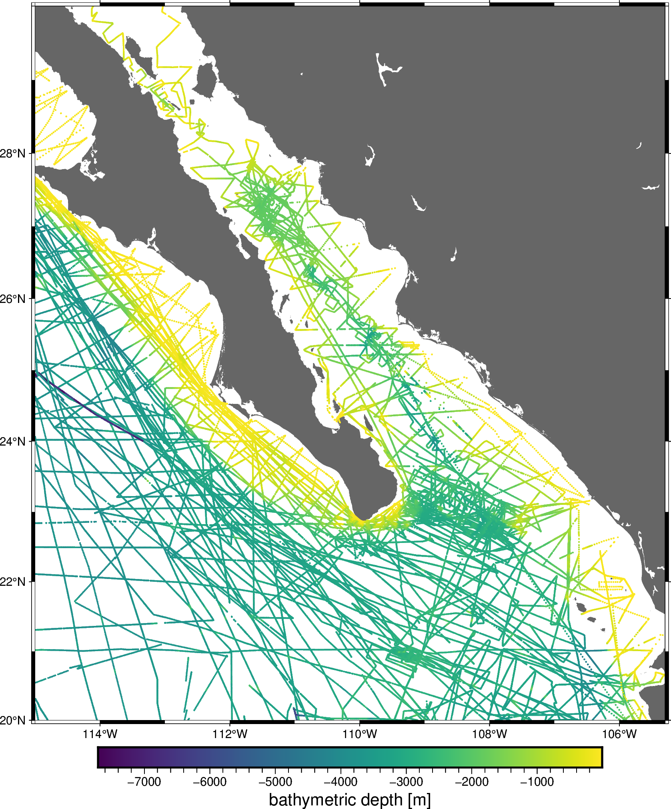
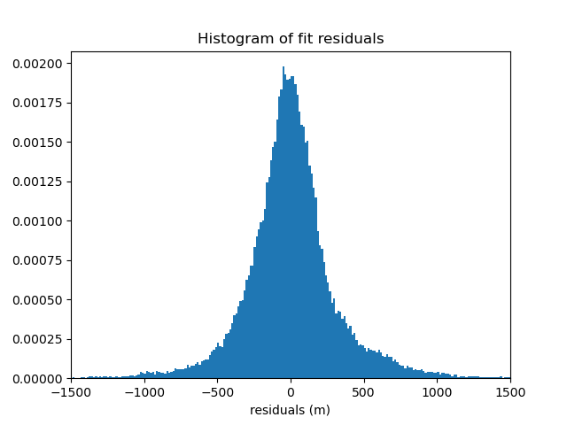
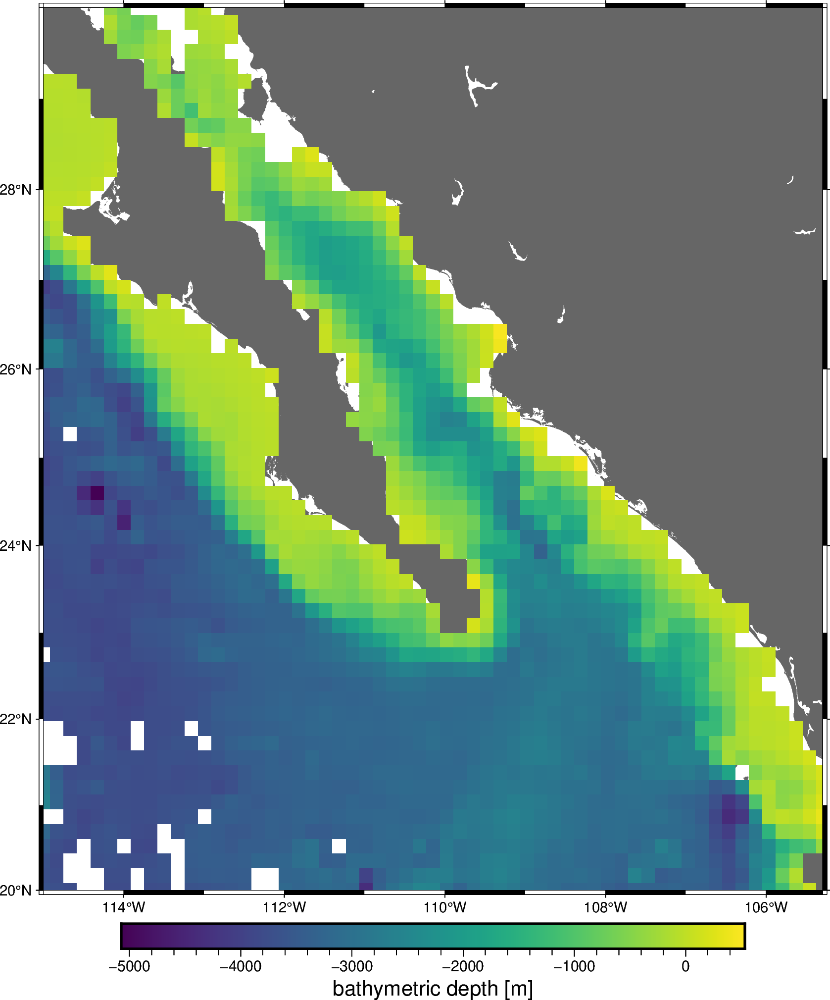
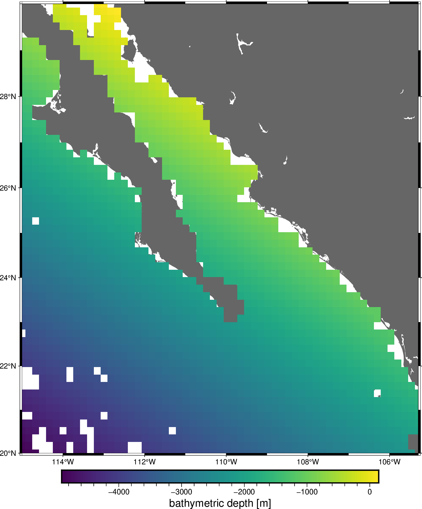

Note
Go to the end to download the full example code
Chaining Operations#
Often, a data processing pipeline looks like the following:
Apply a blocked mean or median to the data
Remove a trend from the blocked data
Fit a spline to the residual of the trend
Grid using the spline and restore the trend
The verde.Chain class allows us to created gridders that perform
multiple operations on data. Each step in the chain filters the input and
passes the result along to the next step. For gridders and trend estimators,
filtering means fitting the model and passing along the residuals (input data
minus predicted data). When predicting data, the predictions of each step are
added together.
Other operations, like verde.BlockReduce and verde.BlockMean
change the input data values and the coordinates but don’t impact the
predictions because they don’t implement the
predict method.
Note
The Chain class was inspired by the
sklearn.pipeline.Pipeline class, which doesn’t serve our purposes
because it only affects the feature matrix, not what we would call data
(the target vector).
For example, let’s create a pipeline to grid our sample bathymetry data.
import matplotlib.pyplot as plt
import numpy as np
import pygmt
import pyproj
import verde as vd
data = vd.datasets.fetch_baja_bathymetry()
region = vd.get_region((data.longitude, data.latitude))
# The desired grid spacing in degrees
spacing = 10 / 60
# Use Mercator projection because Spline is a Cartesian gridder
projection = pyproj.Proj(proj="merc", lat_ts=data.latitude.mean())
proj_coords = projection(data.longitude.values, data.latitude.values)
fig = pygmt.Figure()
fig.coast(region=region, projection="M20c", land="#666666")
pygmt.makecpt(cmap="viridis", series=[data.bathymetry_m.min(), data.bathymetry_m.max()])
fig.plot(
x=data.longitude,
y=data.latitude,
color=data.bathymetry_m,
cmap=True,
style="c0.05c",
)
fig.basemap(frame=True)
fig.colorbar(frame='af+l"bathymetric depth [m]"')
fig.show()

/home/runner/work/verde/verde/doc/tutorials_src/chain.py:57: FutureWarning: The 'color' parameter has been deprecated since v0.8.0 and will be removed in v0.12.0. Please use 'fill' instead.
fig.plot(
We’ll create a chain that applies a blocked median to the data, fits a polynomial trend, and then fits a standard gridder to the trend residuals.
Chain(steps=[('reduce',
BlockReduce(reduction=<function median at 0x7efd3d8c1130>,
spacing=18500.0)),
('trend', Trend(degree=1)), ('spline', Spline(mindist=0))])
Calling verde.Chain.fit will automatically run the data through the
chain:
Apply the blocked median to the input data
Fit a trend to the blocked data and output the residuals
Fit the spline to the trend residuals
/usr/share/miniconda/envs/test/lib/python3.12/site-packages/verde/blockreduce.py:179: FutureWarning: The provided callable <function median at 0x7efd3d8bf1a0> is currently using DataFrameGroupBy.median. In a future version of pandas, the provided callable will be used directly. To keep current behavior pass the string "median" instead.
blocked = pd.DataFrame(columns).groupby("block").aggregate(reduction)
/usr/share/miniconda/envs/test/lib/python3.12/site-packages/verde/blockreduce.py:236: FutureWarning: The provided callable <function median at 0x7efd3d8bf1a0> is currently using DataFrameGroupBy.median. In a future version of pandas, the provided callable will be used directly. To keep current behavior pass the string "median" instead.
grouped = table.groupby("block").aggregate(self.reduction)
Now that the data has been through the chain, calling
verde.Chain.predict will sum the results of every step in the chain
that has a predict method. In our case, that will be only the
Trend and Spline.
We can verify the quality of the fit by inspecting a histogram of the residuals with respect to the original data. Remember that our spline and trend were fit on decimated data, not the original data, so the fit won’t be perfect.
residuals = data.bathymetry_m - chain.predict(proj_coords)
plt.figure()
plt.title("Histogram of fit residuals")
plt.hist(residuals, bins="auto", density=True)
plt.xlabel("residuals (m)")
plt.xlim(-1500, 1500)
plt.show()

Likewise, verde.Chain.grid creates a grid of the combined trend and
spline predictions. This is equivalent to a remove-compute-restore
procedure that should be familiar to the geodesists among us.
grid = chain.grid(
region=region,
spacing=spacing,
projection=projection,
dims=["latitude", "longitude"],
data_names="bathymetry",
)
grid = vd.distance_mask(
data_coordinates=(data.longitude, data.latitude),
maxdist=spacing * 111e3,
grid=grid,
projection=projection,
)
grid
Finally, we can plot the resulting grid:
fig = pygmt.Figure()
fig.coast(region=region, projection="M20c", land="#666666")
fig.grdimage(
grid=grid.bathymetry,
cmap="viridis",
nan_transparent=True,
)
fig.basemap(frame=True)
fig.colorbar(frame='af+l"bathymetric depth [m]"')
fig.show()

Each component of the chain can be accessed separately using the
named_steps attribute. It’s a dictionary with keys and values matching
the inputs given to the Chain.
print(chain.named_steps["trend"])
print(chain.named_steps["spline"])
Trend(degree=1)
Spline(mindist=0)
All gridders and estimators in the chain have been fitted and can be used to generate grids and predictions. For example, we can get a grid of the estimated trend:
grid_trend = chain.named_steps["trend"].grid(
region=region,
spacing=spacing,
projection=projection,
dims=["latitude", "longitude"],
data_names="bathymetry",
)
grid_trend = vd.distance_mask(
data_coordinates=(data.longitude, data.latitude),
maxdist=spacing * 111e3,
grid=grid_trend,
projection=projection,
)
grid_trend
fig = pygmt.Figure()
fig.coast(region=region, projection="M20c", land="#666666")
fig.grdimage(
grid=grid_trend.bathymetry,
cmap="viridis",
nan_transparent=True,
)
fig.basemap(frame=True)
fig.colorbar(frame='af+l"bathymetric depth [m]"')
fig.show()

Total running time of the script: (0 minutes 3.530 seconds)